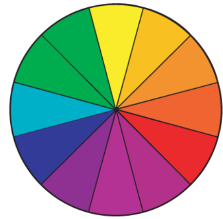

Nome: Victor Avalos
Harmonia Escolhida: Monocromático
Paleta de cores
Códigos: #97A1BA, #586689, #B6C1DE, #2D3B5E, #101A34, #071433.
O círculo cromático é uma representação das cores visíveis ao olho humano, organizadas de forma harmônica para ilustrar suas relações e combinações.
É muito importante para criar combinações de cores.
O circulo cromatico é composto por 12 cores, dividas entre: As primárias, as secundárias e as terciárias.
Harmonia Monocromática: Usa variações de uma unica cor. Por exemplo, usar apenas o azul, porém, um azul claro, um azul escuro, um ciano, etc.
Harmonia Análoga: Usa cores que estão lado a lado no circulo cromatico.
Harmonia Complementar: Usa cores opostas no circulo cromatico.
Harmonia Complementar Dividida: Utiliza apenas uma cor e com duas cores vizinhas à sua complementar.
Harmonia Triádica: Utiliza três cores equidistantes no circulo cromatico.
Harmonia Quádrupla: Utiliza quatro cores equidistenates no circulo cromatico.
Harmonia Monocromática: Utilizada em designs minimalistas e lares que transmites elegância.
Harmonia Análoga: Utilizada em interiores e moda, criando uma sensação harmônica natural e fluidez pois as cores se misturam suavemente.
Harmonia Complementar: Escolhida para dar destaque e criar impacto visual. Comum em designs que desejam chamar atenção, como publicidade, logo, etc.
Harmonia Complementar Dividida: Destaque equilibrado, indicada para apresentações e ilustrações que precisam de dinamismo sem agredir o visual.
Harmonia Triádica: Utilizada em jogos e artes para criar composições vibrantes, diversificando as cores sem perder a harmônia.
Harmonia Quádrupla: Utilizda na intenção de criar uma variedade e energia visual, como eventos e produções artísticas.
Cabeçalho: Cor que tenha um bom contraste com o fundo. O ideal é uma cor que seja mais escura que a cor principal.
Parágrafos: Cores neutras que facilitam a leitura.
Bordas: Cor que combina com a paleta, uma variação mais clara ou mais escura que a principal.
Links: Uma cor que se destaque, o ideal e mais utilizado é um azul vibrante.
Tabelas: Fundo neutro para facilitar a leitura e as linhas que dividem as informações devem ser alternadas para deixar melhor na organização.
Happy Hues: Paletas aplicadas a exemplos de design real.
Color Space: Gera variações de cores harmônicas que combinam entre si.
Brand Colors: Oferece a paleta de cores de grandes marcas.
Adobe Color: Ferramenta da adobe que permite criar combinações de cores.
Canva Colors: Paletas prontas para utilizar em designs.
Color Mind: Gere cores automaticamente com inteligência artificial.